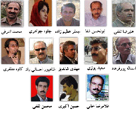

پذيرش > اخبار > بیانیه اعتراضی بیش از 800 نفر برای آزادی فعالان کمپینی: جلوه جواهری و کاوه مظفری و (...)

 بیانیه اعتراضی بیش از 800 نفر برای آزادی فعالان کمپینی: جلوه جواهری و کاوه مظفری و فعالان کارگری بیانیه اعتراضی بیش از 800 نفر برای آزادی فعالان کمپینی: جلوه جواهری و کاوه مظفری و فعالان کارگری
11 خرداد 1388 - - نسخه قابل چاپ
تغییر برای برابری - بیانیه حدود 800 نفر از ازافراد و گروه ها برای آزادی جلوه جواهرِی و کاوه مظفری و کلیه بازداشت شدگان 11 اردیبهشت در خطاب به رئیس قوه قضائیه :
جلوه جواهری و کاوه مظفری را آزاد کنید

به ادامه بازداشت فعالان کارگری و کمپینی پایان دهید
جمعه 11 اردیبهشت 1388 مصادف با روز جهانی کارگر گردهمایی مسالمت آمیزی که قرار بود به دعوت تشکل های کارگری در پارک لاله برگزار شود، پیش از شروع به خشونت و بازداشت کشیده شد. در میان بازداشت شدگان مردم رهگذر، کارگران، دانشجویان و فعالان کارگری و همچنین برخی از فعالان کمپین یک میلیون امضا حضور داشتند. در حالی که طبق اصل 27 قانون اساسی حتی برگزاری تجمعات مسالمت آمیز منع قانونی ندارد.
برخی از بازداشت شدگان روز جهانی کارگر به "تبانی برای شرکت در تجمع"، "اقدام علیه امنیت" و "اخلال در نظم عمومی" متهم شده و اکنون به قید کفالت و وثیقه آزاد شده اند اما بسیاری دیگر همچنان در بازداشت بسر می برند. بنا بر اظهارات خانواده زندانیان، بازداشت شدگان در بند 240، تحت بازجویی همراه با اعمال خشونت (از جمله لگد زدن به شکم و پهلو ها، زدن سیلی و مشت به صورت، کوبیدن زندانی به دیوار و و ضرب و شتم طولانی مدت ) قرار گرفته اند، طی روزهای اخیر با توجه به انتقال آنان به بند عمومی، برخی از آنان را مجددا به بند 209 و 240 منتقل کرده و مورد ضرب وشتم قرار می دهند.
به رغم ابراز نگرانی های بسیار خانواده ها و ارسال شکایت نامه هایی از سوی آنها به دفتر رئیس قوه قضائیه، کمیسیون اصل نود، کمیسیون امنیت ملی و... هیچ توضیح و پاسخ روشنی در مورد وضعیت افراد بازداشتی داده نشده است. بر اساس اظهارات خانواده ها از میان مردان بازداشتی حدود 20 نفر همچنان در زندان اند و از میان فعالان کمپینی، کاوه مظفری همچنان در بازداشت بسر می برد و گفته می شود که زیر فشار روحی و فیزیکی بسیار بوده است.
جلوه جواهری را با آنکه در زمان برگزاری مراسم در پارک حضور نداشت در ساعات بامدادی 12 اردیبهشت در منزل مسکونی اش بازداشت کردند. همسر او ، کاوه مظفری در روز 11 ازدیبهشت پیش از شروع مراسم روز کارگر در پارک لاله بازداشت شده بود و وقتی ماموران با یک حکم بازرسی بدون عنوان (طبق گفته مظفری) به همراه وی برای تفتیش منزل مراجعه کردند جواهری را نیز به زور و بدون حکم بازداشت با خود بردند و سپس در خانه را نیز پلمب کردند. با آنکه همه زنان بازداشت شده در روز جهانی کارگر آزاد شدند، و علاوه بر این بازجویان پرونده به جواهری گفته بودند که او به اشتباه بازداشت شده اما وی را همچنان در حبس غیر قانونی نگه داشته و به بازجویی از وی و همسرش به خاطر فعالیت در کمپین ادامه می دهند و نیز آنها را ضمن اتهام زنی های بی اساس تحت فشار قرار داده اند.
ما امضا کنندگان این بیانیه از مسئولان قضایی کشور به ویژه رئیس قوه قضائیه، خواهان تضمین امنیت جسمی و روانی بازداشت شدگان و پایان دادن به شکنجه های روحی و روانی بر زندانیان و نیز، تبرئه همه متهمان روز جهانی کارگر و آزادی بی قید وشرط کلیه فعالان مدنی از جمله دو فعال کمپین یک میلیون امضا جلوه جواهری و کاوه مظفری هستیم.
***
اگر قبلا امضا کرده اید اما نام شما در لیست زیر نیست یا اگر اکنون قصد امضا کردن دارید، لطفا نام و نام خانوادگی خود را در لینک زیر وارد کنید.
https://spreadsheets.google.com/viewform?formkey=cnVidzRNVEhxdHJ3YUdkREV5UGw0SUE6MA
امضای افراد و گروه ها و سایت ها
آهو رهایی، آذر صیدی راد، آذرين صادق، آرش حافظی پور، آرش حافظي، آرش نصيري اقبالي، آرمان بایونسا، آريا دخت صدري، آزاد حاجی آقايی، آزاد مراديان، آزاده آزاد، آزاده خسروشاهی، آزیتا رضوان، آسیه امینی، آمنه شيرافكن، آنا نرسسيان، آوين كهزادي، آیداسعادت، آینده آزاد، آزاده فرامرزیها
ابراهيم امداد، احسان صباغیان، احسان کردامیر، احسان نجفی یزدی، احمد باطبی، احمد حسيني، احمد رفعت، اختر قاسمی، ارسلان چنگيزيان، ارمغان زاهد،اشرف بوستاني، افسانه برزويي، افسانه بیرانوند، افسانه پورنوروز، افسر پرويز، اقدس شعبانی، اكبر عطري، اكبر مهدي، اكرم زاهدي، اكرم غريبي، المیرا انصاری، الناز انصاری، الناز محمدي، الهام انصاری، الهام عميدي، الهه امانی، اميد ك.م، امير حسين گنج بخش، امير محمد زاده، امير يهياوي، امين كرد، امیر حسین رحمانی، امیر حسینی، امیر خالقی، امیر رشیدی، امیر شریفی، امیر فرشاد ابراهیمی، امیر نیک پی، امیر یعقوبعلی
، امین علم الهدی، اندرانیک آندراسیان،اورنج قلي خاني، ايرج جواهري، احمد رافت،الناز بابایی، الینا اذری
بابك پيرپوزيان، بابك جندقي، بابك خداياري، بتول ابراهیمی، بخشعلي جواهري، بلال مرادویسی، بنفشه حجازی، بهار فامیلی، بهارك احمدي، بهاره علوی، بهرام بیرانوند، بهرام واحدی، بهروز علوی،بهزاد اميري، بهناز پیشکار، بهناز شكاريار، بهنود آقابراری، بيتا طاهباز، بیتا نقاشیان، بیژن پیرزاده،
پاشا، پانته آ شیرازی، پانیذ، پدرام جمشيدي، پرتو نوري علا، پرستو اله ياري، پرهام نيك اعتقاد، پروين ذبيحی، پروين ضرابي، پروین اردلان، پريا رضواني، پريسا كاكايي، پريسا معلميان، پريناز اتابكي، پریسا کریمی، پژمان خادمی، پژمان طوقیا، پژمان موسوي، پگاه پشتاره، پورنگ خادمی، پوریا پشتاره، پونه زارع، پويا احمدي، پويا عزيزي، پويان چنگيزيان، پويش عزيزالدين، پویا صبوری، پویان ساکی، پيمان فروغي، پيمانه اميري، پیمان مردوخی، پیمان ملاذ، پرویزهراتی نژاد، پژهان مختاری ، پیمان قیامی، پویا نعمتالهي
تادر اوپناسیا، تارا نجد احمدی، تارا نیازی، تقي حاضري، تورج پهلوان، تينا حقيقي، تیرداد بنکدار، تیوا کاران،
ثريا بيات، ثريا صدقي، ثريا فلاح، ثريا كياني، ثریا شرفی، ثریا یعقوبی،
جعفر ابراهيمي، جعفر ابراهيمي ازندرياني، جلال شاهي، جلال مظفري، جمال جواهري، جميله مظفري، جهان عصمتی،
جهانشاه رشيديان، جوانه جواهري، جعفر عباسزاده، جواد لگزيان
حامد جواهري، حسام میثاقی، حسن اعتمادي، حسن داراني، حسن شريعت مداري، حسن ناصحي، حسن نايب هاشم، حسين باقرزاده، حسين علوي، حسین لاجوردی، حسین محمدی، حكيمه زارع، حميد امين، حميد حاج حسيني، حميد ديده خاني، حميد سليماني، حميده جواهري، حميده سرمدي، حمید بی ازار، حمید حمیدی، حمید رضا پورسلیمی، حمید سلیمانی، حمید صدر، حمیده نظامی، حمیده وطنی، حنا رحیمی، حیدر ترابی،حمیده دادفر،حميد حميدی،
خديجه جواهري، خدیجه شعبانی، خدیجه مقدم، خسرو شمیرانی،
داريوش آريا، داريوش كديور، داریوش مرادی، داود داودی، درسا سبحانی، درنا بان، دکتر راحله کشتگر، دکتر هوشنگ سبحانی، دنيا اكبري، دنيز پلات،
راحله عسگری زاده، راستی رهنما، راضیه سادات مرتضوی، رامین امن گستر، رامین محمدی، رحمان جوانمردي، رشید اسماعیلی، رضا الماسیان، رضا ترابي، رضا خالقی، رضا خندان، رضا سياوشي، رضا سیدی پور، رضا صيادي، رضا کریمی، رضا کیانپور، رضا گوهرزاد، رضوان مقدم، رضی چعفر زاده، رعنا طايفي، رکسانا ستایش، رنسانس نیوز، روجا بندری، رودابه مختاری، رويا بهرامي، رويا صحرايي، رویا کاشفی، ريحانه رهبران، ریحانه سلیمی،رضا فانييزدي،
زارا امجديان، زحي اورانوس بخت، زرين قبرايي، زری درویی، زهرا جهانگیری، زهرا خليلي، زهرا کرمی، زهرا محمدی، زهره ارزنی، زهره اسدپور، زهره امین، زهره رحمانیان، زویا اسکندریان، زيبا حاضري، زینب پیغمبرزاده، زهرا قنبری ، زهرا بی شتاب
ژاله سالاری، ژیلا بنی یعقوب، ژینا مدرس گرجی،
سارا ايمانيان، سارا ریاضی، سارا صباغیان، سارا ملامحمد، سارا موسوی خوئینی ها، سارا ه، سالار کاشانی، سامان دادمان، سامان رسول پور، سامان شاه محمدی، سامناک آقایی، سپهر بهنام، سپهر قيصر، سپیده شاهدی، ستاره نامدار، سحر رضازاده، سحر سجادی، سحر مفخم، سحر موقتي، سرنگ هاشمي، سعيد داراني، سعيد صارمي، سعيد صحرايي، سعيد كامران، سعید نوری نشاط، سعیده صدیقی، سلمان ضيا، ابراهيمي، سليمان جواهري، سلیمان محمدی، سمانه خادمی، سمانه عابديني، سمانه عصری، سمانه فرید، سمانه موسوی، سميه جواهري، سميه نهاونديان، سمیه رشیدی، سمیه فرید، سمیه موسوی، سناز حيدري، سهراب كريمی، سهيل منصوري، سهیلا ستاری، سودابه آذری، سودابه آزاد، سوري حاضري، سوسن طهماسبی، سولماز ایکدر، سونيا وزيري، سونیا پرو میرزاجانی، سيامك بهبودي، سياوش بيدگاني، سيمين رضايي، سيمين مرعشي، سينا سعيدوزيري، سیاوش محمدی، سیاوش منتظری، سید علی موسوی، سید فاطمه موسوی، سید محسن موسوی، سید محمد موسوی،سیده الهام موسوی، سیده کبری موسوی، سیمین نصیری، سینا اکرم، سارا لقماني، ساناز محسن پور، سمیه صمدی، سهیل آصفی، سهيلاوحدتی
شادی حامدی، شادی صدر، شاهد علوی، شاهین نجفی، شبنم کاظمی، شروین طبری، شعله ايراني، شفیقه حمید زاده،
شقایق اکرم، شقایق کمالی، شمس پرچمی، شهاب الدین شیخی، شهاب مباشري، شهباز يوسفي، شهربانو جانعلیپور،
شهرزاد ثانيه، شهریار محمدی، شهزاد حسینی، شهلا انتصاری، شهلا بهاردوست، شهلا فروزانفر، شهناز پرويز،
شهين محمدي، شهين يوسف زاده، شهین محمدی، شيدا اخوان، شيما فرزادمنش، شيوا بديع نژاد، شیرین اردلان، شیرین اکبری، شیرین عبادی، شیرین فامیلی،شیوا بدیهی نژاد، شیوا نوجو،شاهرخ آصفی، شهرزاد یزدانپور، شاهین دلنشین، شایا شهوق،
صابر صادقی، صادق نقاشزاده، صادقه شیردل، صبا مختاري، صبا موسوی، صبریه نجفی، صدرالدین مظفری، صديقه دمابي، صديقه كشاورز، صدیقه مقدم، صغري بيات، صغري عقيلي، صفت جواهري،
طاهره خرم، طلعت تقی نیا، طه ولی زاده، طيبه خوش نويس،
عادله قیس، عاليه شكربيگي، عباس امیر انتظام، عباس دارني، عباس صباغ ثاني، عباس نوربخش، عبدالغني نصري،
عبداللطیف عبادی، عبدالله مسعود، عبدالله مومنی، عزت الله عارفی فر، عزيز ملودي، عسل اخوان، عسل پیرزاده، عشا مومنی، عصمت دمابي، عفت ماهباز، عطيه صابري، علامه بهمن آبادی، علي افشاري، علي پرويز، علي جوادي، علي مشمولي، علي نقوي، علي نيكويي، علي وژير، عليرضا اخوان، عليرضا پير احمديان، عليرضا جمالي افرمجاني، عليرضا خليق، عليرضا مرادي، عليرضا معلايي، عليرضا نوري زاده، علی اکبر خسروشاهی، علی صادقی، علی طایفی، علی عبدی، علی فتوتی، علی معینی، علی ملک زاده، علیرضا عسگری، عالیه روحی، عسگرداوودی، عليرضا جباري، عليرضا قراباغي ، عليرضا كرماني، عاليه مطلبزاده ،
غزال شولی زاده، غزال کیهان فر، غزل رستمزاده، غمزه كره داغ، غزل محسن پور،
فاطمه ابوالحسن لو، فاطمه امان، فاطمه بندری، فاطمه بيات، فاطمه پوروند، فاطمه جواهري، فاطمه حاضري، فاطمه خانی، فاطمه خليلي، فاطمه كهن بابا، فاطمه محمدی، فاطمه مسجدی، فاطي شاه نظري، فایزه مدرس گرجی، فتانه عباسي، فتح اله نژاد، فخري حاضري، فخري شادفر، فخری نامی، فراز يكيتا، فرانك فريد، فربد ا. خلج، فرخنده جبارزادگان، فرزاد پورمرادی، فرزانه ایل بیگی، فرزانه طاهری، فرشاد دوستی پور، فرشاد محمدي، فرشته فراهانی،
فرشته قاضی، فرشته محمدزاده، فرناز فلاحت، فرناز کمالی، فرنوش تهراني، فرنوش کنانی، فرهاد بیرانوند، فرهاد دادفر، فرهاد رضايي، فرهنگ افسارپور، فروزان بیرانوند، فروغ تميمي، فروغ سمیع نیا، فريبا داوودي مهاجر، فريده غائب، فريدون رازيانی، فهيمه حليم، فهيمه خضر حيدري، فيروزه مظفري، فيروزه مهاجر، فیروزه فولادی، قاصدك
قدسی سرمست،فاطمه بهادری، فاطمه محمدی،
كارن جواهري، كامبيز محمودپور، كامران چنگيزيان، كامران طاهباز، كامران قبرايي، كاوه اسدي، كاوه قاسمی كرمانشاهی، كبری كريمی، كلارا مراديان، كوروش آهنگر، كيوان مظفري، کامبیز شبانکاره، کامبیز گرمستانی،
کامران امیری، کاوه رضائی شیراز، کریم پورحمزاوی، کریم شام بیاتی، کیانا کریمی، کیانوش سنجری، کیوان مظفری
،کیوان صميمي،
گلاره مستشاري، گلاله بهرامی، گلبرگ باشي، گلناز ملک، گلنوش اشتري، گلي حاضري، گوهر بيات،گوهر شميراني
لاله تقي پور، لعيا تقي پور، ليلا پرويز، ليلا قبادي، ليلا گودرزي، لیلا ایرجی فر، لیلا نظری، لیلی بهبهانی، لیلا اسدی،
م. كامل، مائده گیوه چین، مارال فرخی، ماری لودیر فولادی، مازیار مهرپور، مانا عيني، مجتبي رزمي، مجتبي واحديزاده، مجتبی اشراقی، مجيد صاحب، مجيد غرقي، مجید اولیائی، مجید ملکی، مجید موسوی، محبوبه حسین زاده،
محبوبه عباسقلی زاده، محبوبه کرمی، محسن سازگارا، محسن شاهرخی، محسن محمدپور، محسن نژاد، محمد افراسیابی،
محمد امین شایگان نیا، محمد آزاد، محمد برزنجه، محمد بيات، محمد پروانه، محمد جواهري، محمد رضا قاسمی،
محمد شوراب، محمد صابر، محمد صیدی راد، محمد غزنويان، محمد کاظم الماسیان، محمد گرامیان، محمد هادي ملكيان،
محمدرضا بيات، محمدرضا خليق، محمود پورباقر، محمود دريفر، مرتضي پ، مرتضي پرويزان، مرتضي تقي پور، مرجان بزرگ، مرجان نمازي، مرسده مومني، مرضيه وفامهر، مرضیه بخشی زاده، مريم جواهري، مريم خدارحمي، مريم زندي، مريم سطوت، مريم كاشي، مريم نظري، مریم بهرمن، مریم حسین خواه، مریم کسایی، مریم مالک، مریم محسنی، مریم یاسمین، مزدک ليماکشی، مژگان ثروتي، مژگان جديدي، مژگان خليق، مژگان قائم مقامی، مسعود بهنود،
مسعود شکری، مسعود كاظم زاده، مسعود كرمی، مسعود موسوی، مصطفي شفافي، مصطفی ش، معصومه بيات،
معصومه بیرانوند، معصومه عقيلي، ملوک ملا حسینی، ملیکا امینه، منصوره خسروشاهی ، منصوره شجاعی، منوچهر بیرانوند، منوچهر خاكي، مهدي بيات، مهدي پرويز، مهدي جواهري، مهدي داراني، مهديه عقيلي، مهديه فراهاني، مهدی الماسیان، مهدی بازوکار، مهدی سعادتي، مهدی صرافی، مهران براتي، مهران خليق، مهران کوشا، مهران ن، مهرداد ادبایی، مهرداد فتاپور، مهرنوش اعتمادی، مهرنوش رمضانعلي، مهرنوش زنوزي، مهسا شکرلو، مهسا شوراب، مهشید راستی، مهناز پرويز، مهناز مهراني، مو رهبران، مونا زارعي، مونا محمدزاده، ميترا نظري، ميرزاده، ميلاد اميني، مينا صفار، مينا ماني قلم، مينو كيامان، میثم زارع، میلاد اسدی، مینا کشاورز، مینو معماري، میهن روستا،مهرمحسن نادب،منصوره آزاد، مریم خرمی، مهین جوشک، مهدی خلیلی، مژده کامل، منیره کاظمی، منیره محمدی ، محمد آشور، محمد بهزادی، مصطفی تنها، نسيم تنها، مجید تولایی، مینوش صدوقيانزاده ، مهین عليبابايي،محمد ملکی ، محمد میلانی، ميرمحمود يگانلي
ناديا اديبي، نازنین حسینی، نازنین قناویزی، نازي ساساني، ناصر قریشی، ناهيد جعفري، ناهید توسلی، ناهید خیرابی، ناهید کشاورز، ناهید میرحاج، نجيبه جواهري، ندا حبیب اله، نرگس كرمانشاهي، نرمین زمانی، نریمان رحیمی، نسرين احمد زاده، نسرين بصيري، نسرين چنگيزيان، نسرين طاهري، نسرین اردلان، نسرین حمیدی، نسرین ستوده، نسيم خاكي، نسيم روشنايي، نسيم نوري، نسیم تنها، نصور نقی پور، نفیسه آزاد، نفیسه موسوی خوئینی ها، نکارین نورائی، نگار انسان، نگار بيات، نگار حاج حسيني، نگار سماک نژاد، نگین فیروزه ای، نوشاد درزی ور، نوشين كشاورزنيا، نوشین احمدی خراسانی، نوید محبی، نيره توحيدي، نيلوفر كشميري، نيما صفار، نينا وباب، نیره توحیدی، نیکزاد زنگنه، نیما پابوسی، نیما موسوی،
هادي جواهري، هادی الم لی، هاشم ابوالحسینی، هانا دارابی، هانیه سلیمی، هایده تابش، هایده مغیثی، هدی امینیان، هژیر پلاسچی، هستی بیگدلووطن، همایون گل سفیدی، هنگامه هويدا،هومن فراز، هدی(زینب) عرب زاده،هاجر کبیری،
واحد خلوصی، واحد مرادي، وحید ملکی، وریا محمدی، ولي اله جواهري، وهاب دوستی دوكشكانی، ویکتوریا آزاد
ياسر عزيزي، ياور غلامی، یاسمن دادور، یاسمن نیلفروشان، یاسمین دادور، یاشار گرمستانی، یاور خسروشاهی
***
تارنمای مليون ايران، جامعه شناسان بدون مرز، جامعه مجازي ايرانيان، جامعه ی دفاع از حقوق بشر و دموکراسی در ایران سوئد، زنان ملی- اروپا، سایت تهیه، فدراسیون دانشجویان مدافع صلح و حقوق بشر، کانون دانشجویان مدافع حقوق بشر کردستان، کانون زنان ایرانی، کمپین یک میلیون امضا ایتالیا، کمپین آذربایجان، مدرسه فمينيستي، نشریه الکترونیکی جامعه شناسی ایران، سایت آگاهی ،
***
,Ararar Ratoosian
ayşe panuş
,Belgin koc
Betty Williams, Nobel Peace Laureate,
Carol Mann,
,Cihan Bilgen
Colin White,
,criticalsociology
,David L. Johnston
Donna M. Wilhelm,
Douglas A Parker,
Dr Hasan Jashari,South East European, University,Tetova,Macedonia,
Edith Rubinstein, Brussels,
Elise Auerbach,
Emel Celebi,
ESRA KOC,
, Evre Kaynak
, fatma mefkure budak
, Fatma Sündal
, Feyza Canaklı
, Gaucher
, GAYE CÖN
, Genevieve Grava
, Gökçe Kartaler
, Güliz Sağlam
, güllihan
, Gulsah Seral Aksakal
, güneş öztürk
, haady
, heba khan
, hell fish group
, Hulya Gulbahar
, hülya üstün
, Irazca Geray
, Jacob Tahouni
, James Dean
, Janet Afary
, Jessica Bokhout
, Joe Feagin, Professor, USA
, Jose Medina
, Judith Blau
, Kübra Oğuz
, Ladier-Fouladi Marie
, Lin Chew
, liuna isaghoolian
, Lorraine Spiers
, Luísa Franco
, maedeh mozneb
, maria rosário salema
, Mehmet Sonmez
, Mehmet Zubaroglu
, Melek Gundogan
, minagharib
, müjgan arpat
, mustafa ergin
, Natalia Alvarado-Alvarez
, Natalia Alvarado-Alvarez
, Nebahat Dinler
, nur okutan
, Özlem Altuntaş
, Özlem Mollamehmetoğlu
, PINAR ILKKARACAN
, Ray Noori
, Rozana Isa
, saime gulec
, Samuel Laster (www.juedische.at)
, Sanja Sarnavka
, Sarah Standish
, Selma Topalsahin
, Sermin Danışman
, Shohreh Movahedi
, shora jari
, Sociology of Iran
, Spi 10oct
, stella ovadia
, Tülay Hatimoğulları
, Wein, Susanne
, Wesley Greenbaum
, Yasemin Öz
, Yelda Ozcan
, Zelal Yalcin
نوشته های جلوه و کاوه
تـا آزادی جـلوه و کــاوه
ارسال به
بالاترین
،
توییتر
،
فریندفید
،
فیسبوک
در همين بخش :
 پروین ذبیحی برنده جایزه حقوق بشری سازمان غيردولتى اتريشى سودويند شد پروین ذبیحی برنده جایزه حقوق بشری سازمان غيردولتى اتريشى سودويند شد
پخش کارت پستال و بروشور در روز جهانی زن در تهران
تمدید زمان برای امضای بیانیهی جمعی از فعالان زن به مناسبت هشت مارس
مجوزی که در نطفه خفه شد
بیش از 2000 امضا در اعتراض به تبعیض های آموزشی به مجلس تحویل داده شد
ديگر بخش ها :
طرح یک میلیون امضا
|
مقالات
|
سایت نوشته ها
|
اخبار
|
گزارش كمپين
|
گفت و گو
|
علیه سکوت
|
كوچه به كوچه
|
نامه های شما
|
گزارش ویژه
|
گفتگو با اعضا
|
ویژه سالگرد کمپین
|
تصویر برابری
|
دل آرام علی
|
تریبون
|
مقالات
|
تاریخ شفاهی
|
خارج از چارچوب
|
کتابخانه
|
درباره کمپین
|
کمپین در شهرها
|
کمپین در بند
|
صدای تغییر
|
ویژه 22 خرداد
|
لایحه حمایت از خانواده
|
گالری
|
عشا مومنی
|
امیر یعقوبعلی
|
خدیجه مقدم
|
راحله عسگری زاده و نسیم خسروی
|
پروین اردلان،جلوه جواهری، مریم حسین خواه، ناهید کشاورز
|
زینب پیغمبرزاده
|
سعیده امین، سارا ایمانیان، محبوبه حسین زاده، ناهید کشاورز و همایون نامی
|
احترام شادفر
|
نسیم سرابندی زاده،فاطمه دهدشتی
|
وبلاگ مهمان
|
پرونده خرم آباد
|
دستگیری ها
|
مریم مالک
|
پرستو اللهیاری
|
مهرنوش اعتمادی
|
سمیه رشیدی
|
Other Languages
|
همراهان
|
«فراخوان کمپین ده روز با بهاره هدایت»
| English
|